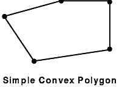

This section on begin-end style drawing discusses the following topics:
The following GL begin-end style subroutines are found in GL3.2 Version 4 for AIX: Graphics Library (GL) Technical Reference.
| bgnclosedline | |
| Draws closed line vertices. | |
| bgnline | |
| Draws vertex-based lines. | |
| bgnpoint | |
| Draws vertex-based points. | |
| bgnpolygon | |
| Draws vertex-based polygons. | |
| bgntmesh | |
| Draws triangle mesh vertices. | |
| concave | |
| Allows the system to draw concave polygons. | |
| endclosedline | |
| Ends a series of closed line vertices. | |
| endline | |
| Ends a series of vertex-based lines. | |
| endpoint | |
| Ends a series of vertex-based points. | |
| endpolygon | |
| Ends a vertex-based polygon. | |
| endtmesh | |
| Ends a series of triangle mesh vertices. | |
| n3f | |
| Specifies a normal vector for lighting calculations. | |
| normal | |
| Specifies a normal vector for lighting calculations (can be used for display lists). | |
| swaptmesh | |
| Toggles the triangle mesh register pointer. | |
| v | |
| Transfers a vertex to the graphics pipe. | |
Begin-end style drawing subroutines draw primitive graphical figures. In these subroutines, all points, lines, and polygons are described in terms of vertices (sets of coordinates that identify points in space).
To draw a graphical figure, use a series of vertex subroutines surrounded by a pair of begin and end subroutines, which mark the beginning and end of the figure. For example, the code to draw a set of five points A, B, C, D and E takes the following form:
<beginning of point vertices> <vertex A> <vertex B> <vertex C> <vertex D> <vertex E> <end of point vertices>.
To draw a polygon whose corners are the same five points, the code takes the form:
<beginning of polygon vertices> <vertex A> <vertex B> <vertex C> <vertex D> <vertex E> <end of polygon vertices>.
Other styles of drawing you can use are described in "Drawing with Move-Draw Style Subroutines" and "Drawing Rectangles, Circles, Arcs, and in Polygons".
This simple example program, crisscross, clears a window to white, and then draws a pair of red lines connecting its opposite corners.
#include <gl/gl.h>
main()
{
Int32 vert1[2] = {100, 100}; /* lower left corner */
Int32 vert2[2] = {100, 500}; /* upper left corner */
Int32 vert3[2] = {500, 500}; /* upper right corner */
Int32 vert4[2] = {500, 100}; /* lower right corner */
prefposition(100, 500, 100, 500);
winopen("crisscross");
ortho2(99.5, 500.5, 99.5, 500.5);
color(WHITE);
clear();
color(RED);
bgnline();
v2i(vert1);
v2i(vert3);
endline();
bgnline();
v2i(vert2);
v2i(vert4);
endline();
sleep(3);
}
In this example, four long arrays are declared, vert1, vert2, vert3, and vert4. Values are assigned to all the elements of each array. The prefposition subroutine defines the next window as a square covering pixels 100 through 500 in both the x and y directions. The winopen subroutine then opens the window described by the prefposition subroutine and assigns it the name crisscross. The ortho2 subroutine sets up the default coordinate system so that a point with coordinates (x, y) maps exactly to the point on the screen that has the same coordinates. The color subroutine sets the window's color property to white and the call to the clear subroutine clears the window to the current value of the window's color property, white.
The next four lines of code draw a line from (100, 100) to (500, 500)—the lower-left corner to the upper-right corner. The bgnline subroutine tells the system to prepare to draw a line using the following vertices. Then the v2i subroutine takes an array of coordinates as its parameter and creates a vertex at those coordinates.
The first v2i subroutine call after the bgnline subroutine creates the first end point of the line segment. The second v2i subroutine call after the bgnline subroutine creates the end point of the line segment and the system draws a line. The endline subroutine call tells the system that it has all the vertices for the line. The next four lines of code draw a line from (100, 500) to (500, 100), the lower-right corner to the upper-left corner.
Finally, sleep(3) delays the program from exiting until three seconds pass; the picture remains on the screen for three seconds.
If more than two points are listed between the bgnline and endline subroutines, each point is connected to the next by a line. The following example program, greensquare, draws an outlined green square in the center of the window:
#include <gl/gl.h>
main()
{
Int32 vert1[2] = {200, 200};
Int32 vert2[2] = {200, 400};
Int32 vert3[2] = {400, 400};
Int32 vert4[2] = {400, 200};
prefposition(100, 500, 100, 500);
winopen("greensquare");
ortho2(99.5, 500.5, 99.5, 500.5);
color(WHITE);
clear();
color(GREEN);
bgnline();
v2i(vert1);
v2i(vert2);
v2i(vert3);
v2i(vert4);
v2i(vert1);
endline();
sleep(3);
}
Note: The first vertex, v2i(vert1), is repeated to close the series of line segments.
A series of connected line segments is called a polyline. GL cannot draw polylines with more than 256 vertices. Other than the number of vertices, there are no restrictions on a polyline. The segments can cross each other, vertices can be reused, and if the vertices are defined in terms of three dimensions, you can place them anywhere within three-dimensional space. In a three-dimensional space, the vertices need not all lie in the same plane.
The previously discussed example programs crisscrossand greensquare use only one form of the vertex subroutine: a two-dimensional version with 32-bit integer coordinates. GL contains 12 forms of vertex (v) subroutines. The coordinates can be short integers (16 bits), long integers (32 bits), single-precision floating-point values (32 bits), and double-precision floating-point values (64 bits). For each of these types, there is a two-dimensional version, a three-dimensional version, and a version that expects vertices expressed in homogeneous coordinates.
The vertex subroutines are illustrated in the following table.
| The Vertex Subroutines | |||
| 2-D | 3-D | 4-D | |
| 16-bit integer | v2s | v3s | v4s |
| 32-bit integer | v2i | v3i | v4i |
| 32-bit floating point | v2f | v3f | v4f |
| 64-bit floating point | v2d | v3d | v4d |
All forms of the vertex subroutine begin with the letter v. The second character is 2, 3, or 4, indicating the number of dimensions, and the final character is s for short integer, i for long integer, f for single-precision floating-point, and d for double-precision floating-point. For example, the 2-D syntaxes are as follows:
void v2s(Int16 vector[2])
void v2i(Int32 vector[2])
void v2f(Float32 vector[2])
void v2d(Float64 vector[2])
The following example program, greensquare2, illustrates the use of some of the different vertex subroutines. It draws exactly the same picture as the previous example does, but uses different versions of the vertex subroutine.
#include <gl/gl.h>
main()
{
Int16 vert1[3] = {200, 200, 0};
Int32 vert2[2] = {200, 400};
Float32 vert3[2] = {400.0, 400.0};
Float64 vert4[3] = {400.0, 200.0, 0.0};
prefposition(100, 500, 100, 500);
winopen("greensquare2");
ortho2(99.5, 500.5, 99.5, 500.5);
color(WHITE);
clear();
color(GREEN);
bgnline();
v3s(vert1);
v2i(vert2);
v2f(vert3);
v3d(vert4);
v3s(vert1);
endline();
sleep(3);
}
The previous program illustrates two things:
In the previous two examples, the program draws a closed polyline—a line segment connecting the last point in the polyline to the first point in the polyline. Because this is a fairly common operation, there is a pair of subroutines to do it: the bgnclosedline and endclosedline subroutines.
The following program, n-gon, draws a regular, unfilled polygon centered at the origin. Specify the number of sides for the polygon on the command line when you run the program.
#include <gl/gl.h> #include <math.h>
main(argc, argv)
int argc;
char *argv[];
{
Int32 n, i;
float vert[2];
if (argc != 2) {
printf("usage: %s <number of sides>\n", argv[0]);
exit(1);
}
n = atoi(argv[1]);
if (n > 256) {
printf("Too many sides\n");
exit(1);
}
prefposition(100, 500, 100, 500);
winopen("n-gon");
ortho2(-1.5, 1.5, -1.5, 1.5);
color(WHITE);
clear();
color(RED);
bgnclosedline();
for (i = 0; i < n; i = i+1) {
vert[0] = cos(i*2.0*M_PI/n);
vert[1] = sin(i*2.0*M_PI/n);
v2f(vert);
}
endclosedline();
sleep(3);
}
The four lines that begin with if (argc != 2) test to determine whether the number of sides was entered on the command line. In other words, if the compiled file were called ngon, then you should run it as: ngon 14, or ngon 24. The line n = atoi(argv[1]); converts the parameter from ASCII to integer n. The ortho2 subroutine sets the default coordinate system up so that the coordinates displayed in the window satisfy the conditions: -1.5 ≤x, y ≤ 1.5.
The purpose of the previous example program is to draw exactly one n-gon, so there is no real penalty for computing the coordinates of the vertices between the bgnclosedline and endclosedline subroutines. If it is necessary to draw the polygon repeatedly, the calculated vertices can be saved in an array.
Other styles of drawing you can use include Drawing with Move-Draw Style Subroutines in GL and Drawing Rectangles, Circles, Arcs, and Polygons in GL.
To draw a set of unconnected points in GL, enter a set of vertices specified between the bgnpoint and endpoint subroutines. The system draws each vertex as a one-pixel point on the screen. The following example program draws a set of unconnected points arranged in a square pattern. The square is 20 pixels wide by 20 pixels high, and the points are spaced 10 pixels apart.
#include <gl/gl.h>
main()
{
Int32 vert[2];
int i, j;
prefposition(100, 500, 100, 500);
winopen("pointpatch");
color(BLACK);
clear();
color(WHITE);
for (i = 0; i < 20; i = i+1) {
vert[0] = 100 + 10*i; /* load the x coordinate */
bgnpoint();
for (j = 0; j < 20; j = j+1) {
vert[1] = 100 + 10*j; /* load the y coordinate */
v2i(vert); /* draw the point */
}
endpoint();
}
sleep(3);
}
As for the line-drawing subroutines, you can have no more than 256 vertices between calls to the bgnpoint and endpoint subroutines. Consequently, the example program cannot wrap the bgnpoint and endpoint subroutines around the loop that increments the variable i; if it did, it would include 400 points. The program, as written, draws 20 points at a time.
The points that are drawn by the bgnpoint and endpoint subroutines are precisely one pixel in size. This size cannot be changed. Although GL does not have any explicit bgnpolymarker or endpolymarker subroutines, there are several methods you can use to get polypoints that are larger than one pixel.
If you want polypoints in the shape of raster patterns, use the font subroutines. That is, the set of rasters to use should be associated with letters of the alphabet with the defrasterfont subroutine. This font is then made current with the font subroutine. The raster patterns, which do not have to look like letters, can be positioned and drawn with the cmov and charstr subroutines, respectively.
Nonraster polymarker primitives can be created with display lists. For instance, display list line drawings in the shape of boxes, stars, crosses, asterisks, and so forth, can be created by using the makeobj subroutine, followed by the drawing, followed by a closeobj subroutine. To draw one of these items, position with the translate subroutine and draw it with the callobj subroutine.
Other aspects of begin-end style drawing include Points, Polygons, Point-Sampled Polygons, Polygonal Shading, and Triangular Meshes.
GL draws a polygon as a filled area on the screen. It draws polygons using the same basic syntax it uses for polylines and sets of polypoints: a list of vertex subroutines surrounded by the bgnpolygon and endpolygon subroutines. For example, the following program draws a filled hexagon on the screen:
#include <gl/gl.h>
float hexdata[6][2] = {
{20.0, 10.0},
{10.0, 30.0},
{20.0, 50.0},
{40.0, 50.0},
{50.0, 30.0},
{40.0, 10.0}
};
main()
{
Int32 i;
prefposition(100, 500, 100, 500);
winopen("bluehex");
color(BLACK); clear();
color(BLUE);
bgnpolygon();
for (i = 0; i < 6; i = i+1) v2f(hexdata[i]);
endpolygon();
sleep(3);
}
As with lines and points, polygons must have fewer than 256 vertices. As it does with closed lines, the GL software connects the first and the last point. You do not need to repeat the first point. An informal definition for the procedure for generating a polygon is as follows:
There are cases when this procedure does not generate a true polygon, but it is sufficient for simple enclosed areas.
In GL, a polygon is specified by a sequence of distinct vertices, v1, v2,..., vn, that all lie in a plane. You can define the boundary of the polygon by connecting v1 to v2, v2 to v3, and so on, finally connecting vn back to v1. These connecting segments are called edges. The interior of the polygon is the area inside this region bound by line segments. A polygon is said to be simple if edges intersect only at their common vertices; that is, the edges cannot cross or touch each other.
A polygon is convex if the line segment joining any two points in the figure is completely contained within the figure. Nonconvex polygons are concave. Algorithms that render only convex polygons are much simpler than those that can render both convex and concave polygons.
GL and the hardware can correctly render any polygon if it is simple, or if it consists of exactly four points. (Non-simple four-point polygons are often called bowties because of their shape.)
Some versions of the hardware automatically check for and draw concave polygons correctly, but others do not. The concave subroutine guarantees that the system renders concave polygons correctly. On some hardware there is a slight performance penalty when you use concave. If you intend to draw concave polygons, use the concave subroutine, even if your code is running on a machine that automatically does the correct thing. There is no penalty for the call, and it makes the code portable to other machines.
The following figures illustrate some examples of polygons. The heavy black dots represent vertices, and the lines represent edges:

Certain distortion problems can arise when viewing a polygon. Sometimes these distortions arise from floating-point inaccuracies. But viewing distortions can also arise if the vertices of the polygon were originally specified in three dimensions, and then were transformed and projected to two dimensions (the screen). The only distortion possible for a true polygon (that is, a polygon whose vertices lie in a single plane) is to view it edge on, in which case it collapses to a line.
However, if the defining vertices for the polygon do not all lie in a plane, the projected polygon on the two-dimensional screen might appear to have duplicate vertices, or crossing edges. Various applications may create these not-quite-true polygons when they use a mesh of polygons to model a curved surface.
For most of the surface, the polygons formed by the mesh will be nearly flat (true) polygons. However, as the surface twists, the mesh must twist and the view of the mesh might generate bowtie polygons. This effect is most noticeable at silhouette edges where the mesh curves around to the back of the depicted object.
GL can render the bowties that arise from surface approximating meshes. In most other circumstances, however, GL subroutines for generating polygons generate only true polygons.
To represent a polygon on the screen, the system must turn on a set of pixels. Given a set of coordinates for the vertices of a polygon, there is more than one way to decide which pixels ought to be turned on. The begin-end style subroutines draw point-sampled polygons, while the move-draw style subroutines (for example, the polf, rect, and circ subroutines) draw outlined point-sampled polygons. The latter type of subroutine is described in "Drawing with Move-Draw Style Subroutines".
To illustrate the point sampling method and the reasons for using it, consider drawing two rectangles: rectangle 1 has 2 ≤ x ≤ 5 and 1 ≤ y ≤ 4; rectangle 2 has 2 ≤ x ≤ 5 and 4 ≤ y ≤ 6. What pixels should the system turn on in both cases? The most obvious answer is shown in the figure entitled Non-Point-Sampled Polygons.
If you draw a figure consisting of the two non-point-sampled polygons, you expect them to fit together. Unfortunately, if you draw them both, the pixels on the line y = 4 are drawn twice; once for each polygon. A similar problem occurs if you abut a polygon to the right. Normally, this is not a problem, but if the polygons represent a transparent surface, the duplicated edge, being twice as dense, gives the entire surface a spiderweb-like appearance.
Even if the surface is not transparent, there can still be undesired visual effects. If you draw a checkerboard pattern with edges that overlap by exactly one pixel and then redraw it in single buffer mode, the redrawing is visible because the edges of the squares flicker from one color to the other, even though the final second image is identical to the first. (See "Creating Animated Scenes" for more about single buffer mode.)
GL resolves these problems by using point-sampled polygons. The model used assumes this: ideal mathematical lines (no thickness) connect the vertices. The system draws any pixel whose center lies inside the mathematically precise polygon. It does not draw a pixel if its center lies outside the polygon, nor any pixel whose center lies exactly on the mathematical line segments or vertices that define the polygon. The system draws the pixel only if it lies strictly within the polygon.
This definition effectively eliminates the duplication of pixels from the right and top edges of the polygon, but adjacent polygons can fill those pixels. The figure entitled Point-Sampled Polygons shows point-sampled versions of the two rectangles in Non-Point-Sampled Polygons.
Another advantage of a point-sampled polygon without an outline is that the drawn area of the polygon is much closer to the actual mathematical area of the polygon. In both the Non-Point-Sampled Polygons and Point-Sampled Polygons figures, the drawn areas correspond exactly to the true areas of the polygons. In nonrectangular polygons, the drawn area of the polygon cannot be exact, but the drawn area of the no-outline point-sampled polygon is closer to the true area of the polygon than the area drawn by the older outlined model.
The following figure, Another Point-Sampled Polygon, illustrates the pixels that are turned on in a point-sampled representation of the polygon that connects the vertices (1,1) (1,4) (5,6) and (5,1). The darkened pixels are drawn. The pixels at (1,4), (3,5), (5,6), (5,5), (5,4), (5,3), (5,2), and (5,1) all lie mathematically on the boundary of the polygon but are not drawn because they are on the upper or right edge.
As mathematical entities, lines have no thickness. However, to represent a line on the screen, the system assumes a thickness of exactly one pixel. When you scale an object composed of lines, the lines behave differently from polygons. No matter how much a transformation magnifies or reduces an object composed of lines, the representation of the line remains one pixel thick. Accordingly, there is no corresponding concept of a point sampled line. If a line is drawn around a point-sampled polygon, it fills in the pixels at the upper- and right-hand edges. For compatibility, the polf, rect, and circ subroutines draw a line around the point-sampled version. See "Drawing with Move-Draw Style Subroutines" for information about these subroutines.
Anomalies can occur in the display of very thinly filled polygons. For example, consider the point-sampled rendition of the triangle connecting the points (1,1), (2,3), and (12,7). It is apparently riddled with holes, as illustrated in the following figure, Point-Sampling Anomaly. However, if adjacent polygons that share the vertices are drawn, all the pixels will eventually be filled.
GL offers two methods of shading polygons: flat and Gouraud. Flat-shaded polygons are those that appear flat because they are drawn with only one color. Gouraud-shaded polygons are multicolored; the interior of the polygon is a smooth blend of the colors at the vertices. Usually, the use of Gouraud shading, where appropriate, results in a significantly more realistic image.
Polygonal, or Gouraud, shading is accomplished as follows: the colors at each vertex are linearly interpolated along the edges connecting them, and then the interpolated colors on the edges are interpolated again across the interior of the polygon. The result is a smooth color variation across the entire polygon.
The interpolation is linear in all three components. For example, suppose the edge of a polygon that is 6 pixels long is colored with RGB components (0,20,100) at one end and (75,60,50) at the other. The six pixels would be colored as follows: (0,20,100), (15,28,90), (30,36,80), (45,44,70), (60,52,60), and (75,60,50).
Notice that each of the color components changes smoothly from each pixel to the next. The red component increases by 15 for each pixel, the green component increases by 8, and the blue component decreases by 10 each time. In this case, the pixel color differences work out to whole numbers. Usually this is not the case, but the approximation is done as accurately as possible.
After the colors of the pixels on the edges of the polygon are determined, the same process is used to find the colors of the pixels on the interior. The figure entitled Shaded Triangle shows the result of shading a triangle whose vertices have colors (0,20,100), (75,60,50), and (0,0,0).
Gouraud shading also works in color map mode. In this case, the color indexes, rather than the RGB values, are interpolated. Thus, a shaded six-pixel line with endpoints colored 1 (red) and 6 (cyan) would have its six pixels colored 1, 2, 3, 4, 5, 6, or red, green, yellow, blue, magenta, cyan, assuming that the default color map is used.
Gouraud shading in color map mode is useful when false color data is being presented; for example, engineering or geophysical data such as pressure and elevation. Of course, an appropriate color ramp must be loaded to take full advantage of Gouraud shading in color map mode. A color ramp is a smooth progression of colors in the color map. For instance, the color ramp 1=red, 2=reddish-orange, 3=orange, 4=orange-yellow, 5=yellow, 6=lime-yellow would make the previous example of a six-pixel line appear smooth shaded.
Other aspects of begin-end style drawing include Lines, Polylines, and Closed Lines; Polygons; Point-Sampled Polygons; Polygonal Shading; and Triangular Meshes.
Triangular meshes provide a very efficient way to specify three-dimensional objects that are composed of triangular faces.
A triangular mesh is a set of triangles formed from a series of points. In the Simple Triangle Mesh figure, the seven vertices form five triangles (123, 324, 345, 546, 567). Points 1 and 7 appear in one triangle; points 2 and 6 appear in two triangles, and all the rest appear in all three. In a longer sequence, a higher percentage of the points are used three times. If the mesh in this figure is drawn as five separate triangles, many of the points are transformed multiple times (in fact, transformation to screen coordinates occurs 15 times, although there are only 7 points). The triangular mesh primitive provides a more efficient way to display sequences of triangles.
The Simple Triangle Mesh figure illustrates the simplest case. It uses the sequence
{bgntmesh(); v(1); v(2); v(3); v(4); v(5); v(6); v(7);
endtmesh();}
where v(i) stands for any vertex subroutine with the coordinates of the i-th point. As a result, the pipeline accepts (and transforms) points 1 and 2. When point 3 arrives, it is transformed and the system draws the triangle 123. Then point 3 replaces point 1 (so the pipeline now remembers points 2 and 3), and when point 4 arrives, triangle 324 is drawn, and point 4 replaces point 2.
This sequence continues. Each time a new point is sent, the system draws a triangle containing the new point and the two retained points. The oldest retained point is then discarded, and is replaced by the new point. The sequence ends with a call to the endtmesh subroutine is sent.
The Example of the swaptmesh Subroutine figure illustrates a more complex situation. The first six triangles (123, 234, 345, 456, 567, 678) could be drawn as before, but if nothing is done, the arrival of point 9 causes triangle 789 to be drawn, not triangle 689 as desired. To draw meshes like the one in this figure, we must examine more closely the mechanism the geometry hardware uses to retain points.
The pipeline maintains two previous vertices together with a pointer that points to one or the other of them while drawing a triangle mesh. When a new vertex arrives, a triangle is drawn using all three vertices, and then the new vertex replaces the one pointed to by the pointer. The pointer is then changed to point to the other retained vertex. Thus if nothing special is done, the discarded vertex alternates, drawing a picture like the Simple Triangle Mesh figure.
The following table illustrates what happens internally when the simple triangle mesh is drawn:
| Initial state: | After vertex1: | After vertex2: |
| P -> R1 = junk1 | R1 = vert1 | P -> R1 = vert1 |
| R2 = junk2 | P-> R2 = junk2 | R2 = vert2 |
When vertex3 arrives, triangle 123 is drawn, and the state is:
P -> R2 = vert2
| After drawing 324: | After 345: | After 546: |
| P -> R1 = vert3 | R1 = vert5 | P -> R1 = vert5 |
| R2 = vert4 | P -> R2 = vert4 | R2 = vert6 |
GL contains a subroutine, swaptmesh, whose only effect is to swap the pointer to the other retained vertex. The following sequence draws the mesh in the figure entitled Example of the swaptmesh Subroutine.
bgntmesh(); v(1); v(2); v(3); v(4); v(5); v(6); v(7);
swaptmesh(); v(8); swaptmesh(); v(9); swaptmesh(); v(10); v(4); v(11); endtmesh();
The following table shows what is happening internally:
| After vertex7: | After swaptmesh: | After vertex8: |
| R1 = vert7 | P -> R1 = vert7 | R1 = vert8 |
| P -> R2 = vert6 | R2 = vert6 | P -> R2 = vert6 |
| After swaptmesh: | After vertex9: | After swaptmesh: |
| P -> R1 = vert8 | R1 = vert9 | P -> R1 = vert9 |
| R2 = vert6 | P -> R2 = vert6 | R2 = vert6 |
| After vertex10: | After vertex4: | After vertex11: |
| R1 = vert10 | P -> R1 = vert10 | R1 = vert11 |
| P -> R2 = vert6 | R2 = vert4 | P -> R2 = vert4 |
Without going into such detail, here is the sequence that draws the figure in Another swaptmesh Example:
bgntmesh(); v(1); v(2); v(3); v(4); v(5);
swaptmesh(); v(6); v(7);
swaptmesh(); v(8); v(9); endtmesh();
At most, a limit of 256 vertex subroutines can occur between the bgntmesh and endtmesh subroutines.
The program octahedron.c (in in GL3.2 Version 4 for AIX: Graphics Library (GL) Technical Reference) draws a 3-D octahedron (8-sided regular polyhedron) using the mesh primitive. Because meshes in two dimensions are of little use, the example is three-dimensional. This example uses a number of advanced concepts and routines that are covered in other sections. These include 3-D rotations, hidden surface removal, smooth (double buffered) motion, and a different color mode.
{kind=link}
{kind=link}
{kind=link}
{kind=link}
{kind=link}
{kind=link}
{kind=link}
{kind=link}